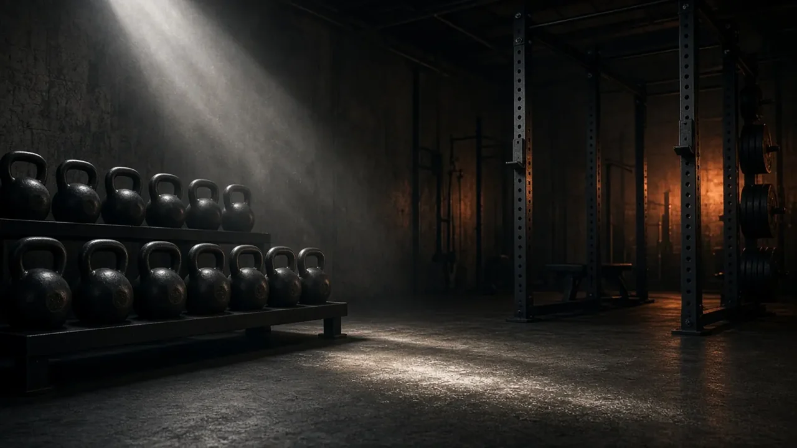

Coached small-group strength classes for real people with real schedules. No mirrors-and-selfies culture, just good lifting.
Four weeks of technique for total beginners. Squat, hinge, press, carry.
Programmed cycles, logged lifts, coach on the floor every session.
Kettlebell circuits that leave you tired, not broken.
| Time | Mon | Wed | Fri | Sat |
|---|---|---|---|---|
| 06:30 | Strength | Strength | Strength | — |
| 12:15 | Conditioning | Foundations | Conditioning | Foundations |
| 18:30 | Foundations | Strength | Open gym | — |